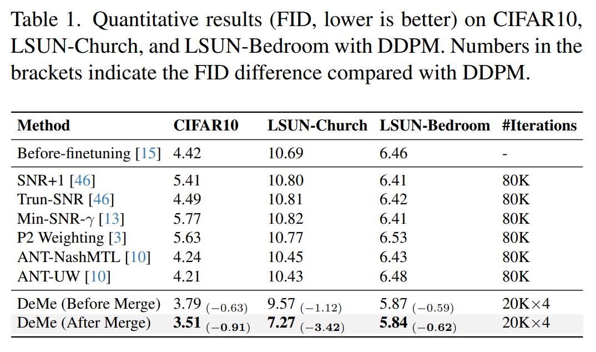
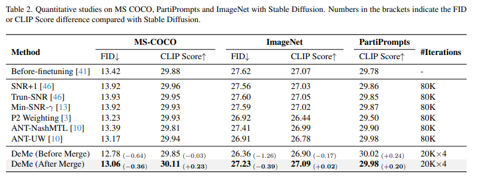

Table 1: Quantitative results on text-to-image generation

Diffusion models are trained by learning a sequence of models that reverse each step of noise corruption. Typically, the model parameters are fully shared across multiple timesteps to enhance training efficiency. However, since the denoising tasks differ at each timestep, the gradients computed at different timesteps may conflict, potentially degrading the overall performance of image generation. To solve this issue, this work proposes a Decouple-then-Merge (DeMe) framework, which begins with a pretrained model and finetunes separate models tailored to specific timesteps. We introduce several improved techniques during the finetuning stage to promote effective knowledge sharing while minimizing training interference across timesteps. Finally, after finetuning, these separate models can be merged into a single model in the parameter space, ensuring efficient and practical inference. Experimental results show significant generation quality improvements upon 6 benchmarks including Stable Diffusion on COCO30K, ImageNet1K, PartiPrompts, and DDPM on LSUN Church, LSUN Bedroom, and CIFAR10. Code is available at GitHub.
Loss landscape of the pretrained diffusion model in different timestep ranges on CIFAR10. We use dimension reduction methods to handle high-dimensional neural networks. Contour line density reflects the frequency of loss variations (i.e., gradients), with blue representing low loss and red representing high loss. The pretrained model resides at the critical point (with zero gradients) with sparse contour lines for the overall timesteps t ∈ [0, 1000), but when the training process is decoupled, it tends to be located in regions with densely packed contour lines, suggesting that there still exists gradients that enable pretrained model to escape from the critical point.
Loss landscape for applying task vectors. The optimal model parameters are neither the pretrained one nor the finetuned one, but lie within the plane spanned by the task vectors computed in Sec. 3.3. We utilize the pretrained and two finetuned model parameters to obtain the two task vectors, respectively. We compute an orthonormal basis from the plane spanned by the task vectors. Axis denotes the movement direction in the parameter space.
@InProceedings{ma2024decouple,
title={Decouple-Then-Merge: Towards Better Training for Diffusion Models},
author={Ma, Qianli and Ning, Xuefei and Liu, Dongrui and Niu, Li and Zhang, Linfeng},
booktitle={Proceedings of the IEEE/CVF Conference on Computer Vision and Pattern Recognition},
year={2025}
}